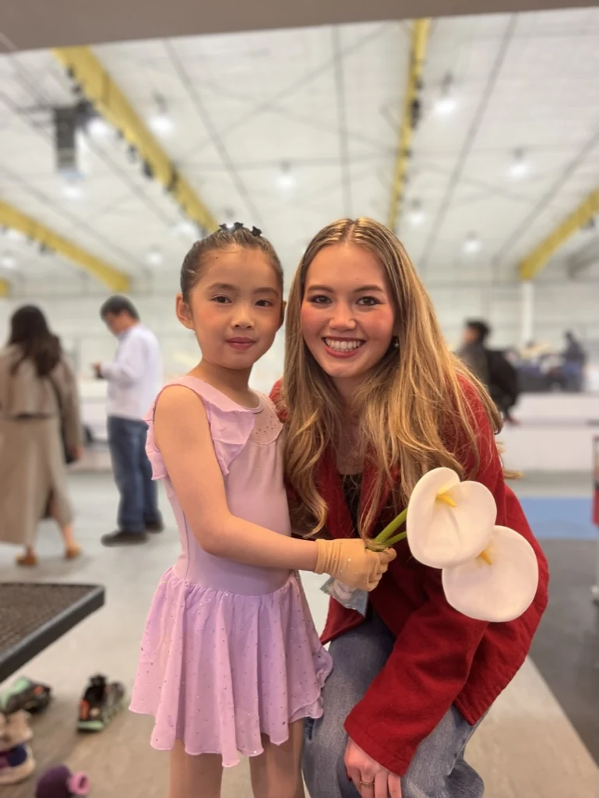
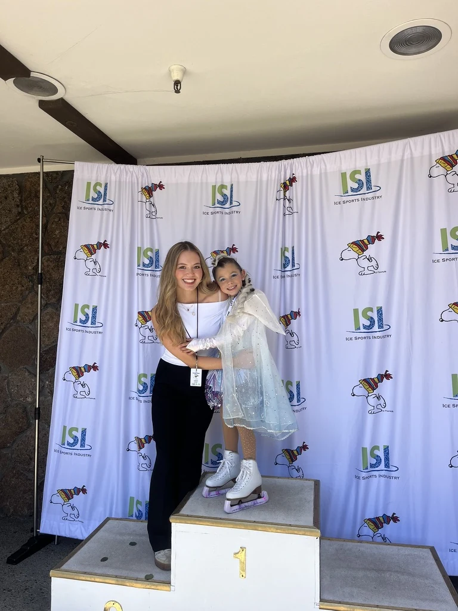
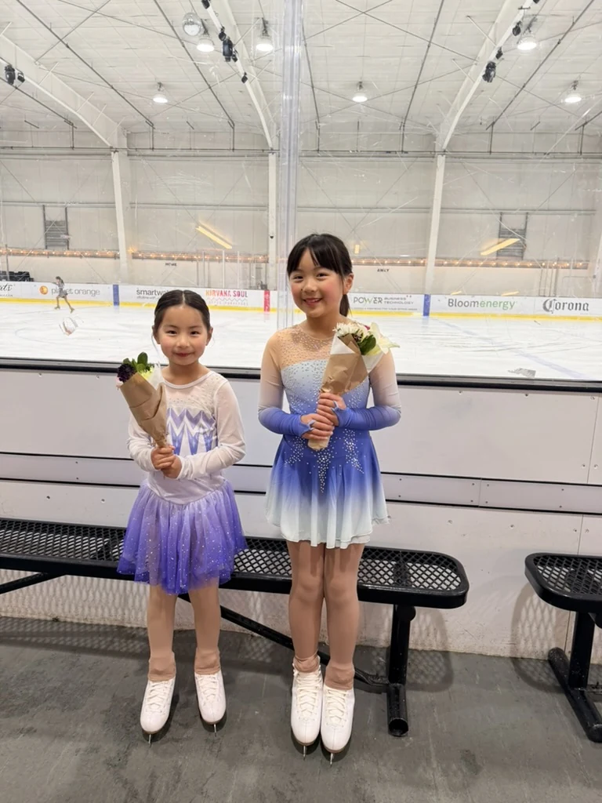

About Me
Engineering, hands-on building, and a lifelong love of figure skating.

Hi, I'm Cassie.
I earned my B.S. in Robotics Engineering, with a minor in Electrical Engineering, from UC Santa Cruz in 2026. I’m now pursuing my M.Eng. in Mechanical Engineering at UC Berkeley, concentrating in control of robotic and autonomous systems.
What I enjoy most is working alongside a team to turn an idea into something real. I love the whole process—from designing in CAD and building prototypes to troubleshooting, testing, and seeing a system come together to solve a real-world problem.
View My Résumé ↗Education
UC Berkeley
Master of Engineering, Mechanical Engineering · Control of Robotic and Autonomous Systems · 2026 to 2027
UC Santa Cruz
B.S. Robotics Engineering · Minor in Electrical Engineering · 2022 to 2026 · Dean’s Honors List
Figure Skating & Coaching
I grew up training and competing in figure skating, and I still compete while pursuing my master's at Berkeley. I've coached since 2023, working with beginners through competitive skaters learning double jumps. One of my favorite parts is helping students build confidence and celebrating their progress—on and off the ice.




